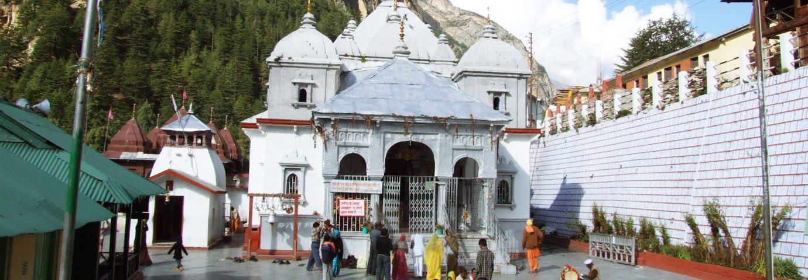

ABOUT GANGOTRI TEMPLE

Gangotri Dham, located at the height of 3,100 meters (approx.) on the Himalayan range in Uttarkashi district of Uttarakhand, holds a very special place in the hearts of Hindus.
It is one of the four sacred and important pilgrimage sites of Chota Char Dham Yatra in Uttarakhand.
Amid all the natural beauty and grace which the mountains and altitude of the place affords, what makes Gangotri one of the holiest places is its intimate connection with River Ganga (the Ganges).
Ganga Maa (mother), the much revered deity of Hindus, originates from the Gangotri glacier at Gaumukh which is some 18 km from the Gangotri town. It is said that Goddess Ganga came to earth in order to wash away the sins of King Bhagirathi's ancestors.
From the folds of mythology till the present time, Ganga River has always been a sacred source of purity for the mankind. Coming to Gangotri for a religious tour is not only a religious duty but a spiritual calling too.
Gangotri Opening Dates 2024 =>
Devotees will be able to perform the pilgrimage to Gangotri Dham from May 10, 2024, the auspicious day of Akshay Tritya.